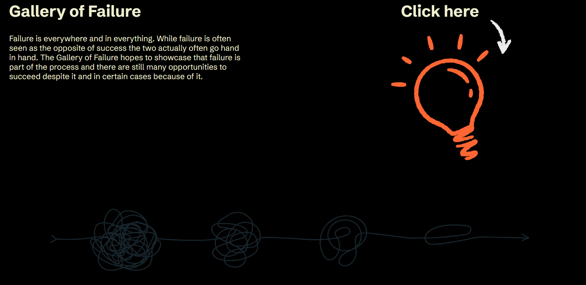
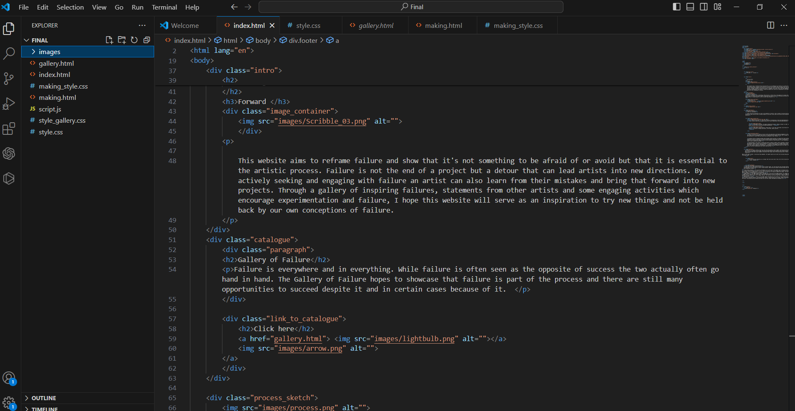
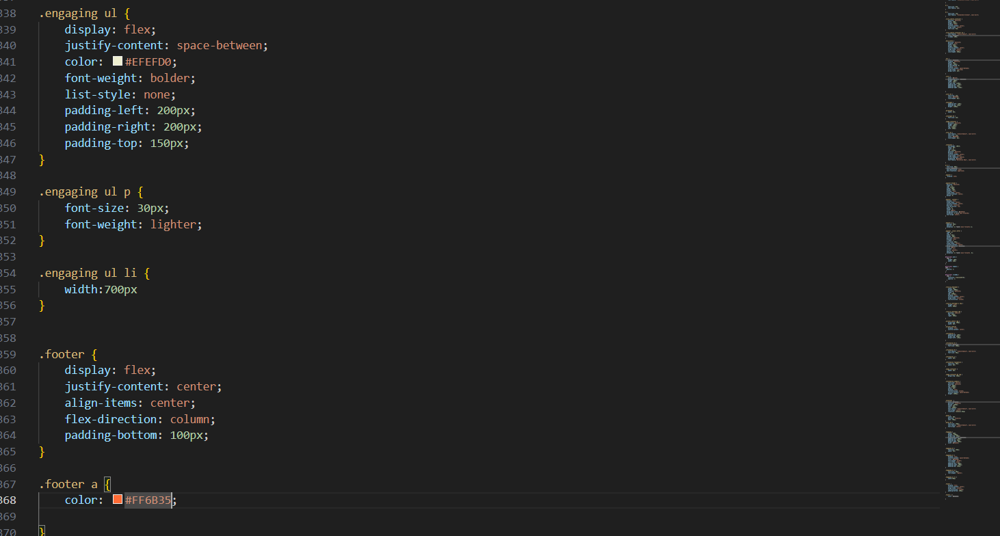

Home
Home page of website, sets the tone for the website, I wanted it to look like the website was going through processes of experimentation. I couldn't decide between missteps to or for success so I wanted to showcase that it was an addition added later.

The gallery took forever to make but I like how it turned out. I found it very inspiring to look through these examples of failure so I hope it does the same for others.

Some of the HTML coding for the index of the website. This is the biggest website I've created so far. If anyone is interested in looking at it more in-depth just right click on the webpage and click inspect to see most of the code.

Some of the CSS code for the styling of the website.